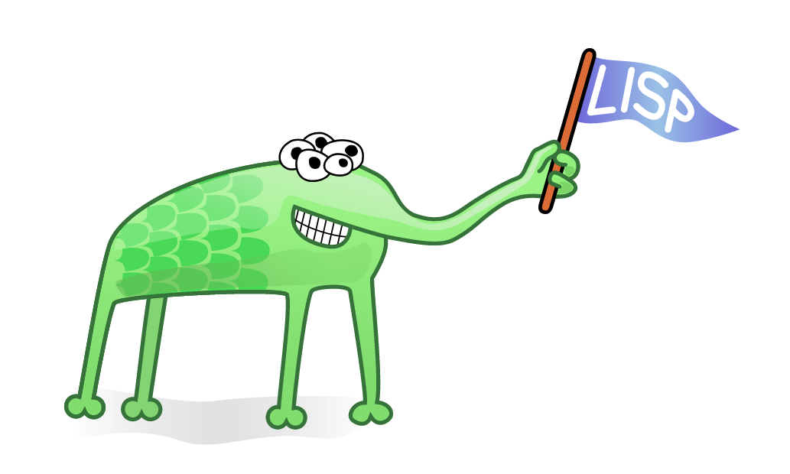

3.2 What Do Different Languages Do?
If all computer languages do the same thing (make the computer do what you want), then why does it matter which one you choose? For the same reason that you wouldn’t take a bicycle to pick up a fridge or get a physical from an oncological neurosurgeon. Some tools are better for certain jobs.
It’s possible for a C programmer and a Java programmer to read each other’s code, but it’s harder to make C code and Java code work together. C and Java represent the world in different ways, structure data in different ways, and address the components of the computer in different ways. There are true benefits to everyone on a team using the same language. They’re all thinking the same way about how to instruct the computer to process data.
It’s not necessary for every team across a big organization to use the same language. In fact, it’s often counterproductive. Large organizations have lots of needs and use many languages and services to meet them. For example, Etsy is built atop PHP—but its product-search service uses Java libraries, because the solutions for search available in Java are great.
Some programming languages, such as C, will do their best to do exactly as you ask, even if that means crashing your computer. Others, like OCaml and Haskell, are very constrained and ask a programmer to hew to a narrow form, trying to steer you away from anything stupid.
11
Programmers spend much of their time dealing with different types of data. Let’s say I have a number x, like 7, and a word y, like “cat.” When I multiply x and y, what’s the result? A runtime error in many languages—because you can’t multiply a number by a word. The language Perl returns a zero, which is expedient but baffling, and JavaScript returns “NaN,” for “not a number.”
I know, I know.
How often are you going to be multiplying sevens and cats? Soooo much. The real world of data is messy, so you’re constantly converting one type of thing into another type—and the shading is subtle. Sometimes an e-mail address is just a bunch of letters and symbols; sometimes it’s a field just plucked from a database; sometimes it’s specially prepared to be sent into the Internet. Programmers write a lot of code that converts data from one type to another.
Some languages are incredibly vigilant about types, and what can be done with data of any given type. They push hard for programmers to nail down data types, and the payoff is that these languages can then identify problems before they happen—at “compile time” instead of later, when the program is running. A statically typed language like Java catches you before you multiply a poem or try to find the geographic distance between Chicago and a Social Security number. Other languages are far more caveat programmer.
I know, I know.
How often are you going to be multiplying sevens and cats? Soooo much. The real world of data is messy, so you’re constantly converting one type of thing into another type—and the shading is subtle. Sometimes an e-mail address is just a bunch of letters and symbols; sometimes it’s a field just plucked from a database; sometimes it’s specially prepared to be sent into the Internet. Programmers write a lot of code that converts data from one type to another.
Some languages are incredibly vigilant about types, and what can be done with data of any given type. They push hard for programmers to nail down data types, and the payoff is that these languages can then identify problems before they happen—at “compile time” instead of later, when the program is running. A statically typed language like Java catches you before you multiply a poem or try to find the geographic distance between Chicago and a Social Security number. Other languages are far more caveat programmer.
Some languages have cute logos, like the Go gopher.
There’s Scratch, a teaching language for kids. It doesn’t use text much at all but allows li’l coders to move icons around on screen and assemble programs like Legos. Its logo is a smiling cat on two legs.

And then there’s Lisp, which didn’t come with a logo when it was first proposed in the 1950s but now has a community-created five-eyed alien holding a flag with its proboscis. Lisp is a classic language. There are some languages that just have authority, elegance—canonical computer languages.
And one of these is C. Most of the popular languages look a lot like it. C’s de facto logo is, well, the letter C. C is called C because it came after another language. That language was called B.
3.2 不同的語言做什麼？
PHOTOGRAPHER: STEVEN BRAHMS FOR BLOOMBERG BUSINESSWEEK;
PROP STYLIST: ZACHARY KINSELLA
攝影師：史蒂芬·布拉姆斯（STEVEN BRAHMS），彭博商業周刊；
道具設計師：ZACHARY KINSELLA
PROP STYLIST: ZACHARY KINSELLA
攝影師：史蒂芬·布拉姆斯（STEVEN BRAHMS），彭博商業周刊；
道具設計師：ZACHARY KINSELLA
如果所有計算機語言都執行相同的操作（使計算機執行您想要的操作），那麼為什麼選擇哪種語言無關緊要？出於同樣的原因，您不會騎自行車去拿起冰箱，也不會從腫瘤神經外科醫生那裡得到體檢。有些工具更適合某些工作。
C程序員和Java程序員可以讀取彼此的代碼，但是要使C代碼和Java代碼協同工作更困難。C和Java以不同的方式表示世界，以不同的方式構造數據，並以不同的方式處理計算機的組件。使用相同語言為團隊中的每個人帶來真正的好處。他們都在以同樣的方式思考如何指示計算機處理數據。
大型組織中的每個團隊都不必使用相同的語言。實際上，這通常適得其反。大型組織有很多需求，並使用多種語言和服務來滿足它們。例如，Etsy建立在PHP之上，但是它的產品搜索服務使用Java庫，因為Java中可用的搜索解決方案很棒。
某些編程語言（例如C）將按照您的要求盡其所能，即使這意味著您的計算機崩潰了。其他人，例如OCaml和Haskell，則受到很大的約束，要求程序員以狹義的形式擺弄，試圖使您遠離任何愚蠢的事物。
11
程序員花費大量時間來處理不同類型的數據。假設我有一個數字x（例如7）和一個單詞y（例如“ cat”）。當我將x和y相乘時，結果是什麼？許多語言的運行時錯誤-因為您不能將數字乘以單詞。Perl語言返回的零是權宜之計，但令人困惑，JavaScript返回的是“ NaN”，而不是“不是數字”。
我知道我知道。
你多久會乘七隻貓和幾隻貓？太好了 數據的真實世界是混亂的，因此您不斷地將一種類型的事物轉換為另一種類型，並且陰影是微妙的。有時，電子郵件地址只是一堆字母和符號。有時，這是一個從數據庫中摘錄的字段；有時，它是為發送到Internet而特別準備的。程序員編寫了大量代碼，將數據從一種類型轉換為另一種類型。
某些語言非常警惕類型，對於任何給定類型的數據可以做什麼。它們促使程序員努力確定數據類型，而好處是這些語言可以在問題發生之前即在“編譯時”而不是在程序運行時稍後發現問題。諸如Java之類的靜態類型語言會在您加一首詩或嘗試查找Chicago與社會安全號碼之間的地理距離之前就抓住您。其他語言則更需要程序員注意。
我知道我知道。
你多久會乘七隻貓和幾隻貓？太好了 數據的真實世界是混亂的，因此您不斷地將一種類型的事物轉換為另一種類型，並且陰影是微妙的。有時，電子郵件地址只是一堆字母和符號。有時，這是一個從數據庫中摘錄的字段；有時，它是為發送到Internet而特別準備的。程序員編寫了大量代碼，將數據從一種類型轉換為另一種類型。
某些語言非常警惕類型，對於任何給定類型的數據可以做什麼。它們促使程序員努力確定數據類型，而好處是這些語言可以在問題發生之前即在“編譯時”而不是在程序運行時稍後發現問題。諸如Java之類的靜態類型語言會在您加一首詩或嘗試查找Chicago與社會安全號碼之間的地理距離之前就抓住您。其他語言則更需要程序員注意。
有些語言有可愛的徽標，例如Go gopher。

Scratch是一種針對兒童的教學語言。它根本不使用文本，而是允許高級編碼人員在屏幕上四處移動圖標並組裝諸如Legos之類的程序。它的徽標是兩隻腿上的笑臉貓。
然後是Lisp，它在1950年代首次提出時並沒有帶有徽標，但是現在有一個社區創建的五眼外星人，它的鼻子長著國旗。Lisp是一種經典語言。有些語言只具有權威性，高雅性-規範的計算機語言。

其中之一就是C。大多數流行語言看起來都很像。C的事實上的徽標是字母C。C之所以稱為C是因為它是繼另一種語言之後的。該語言稱為B。